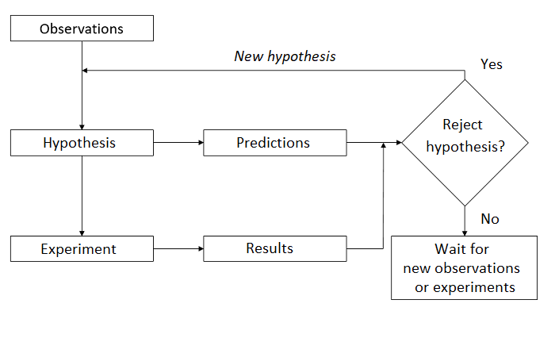
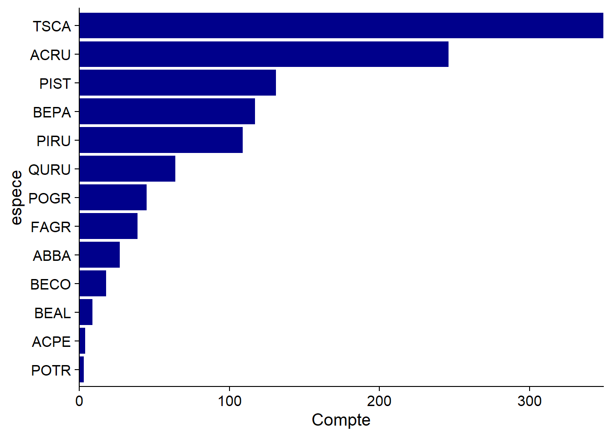
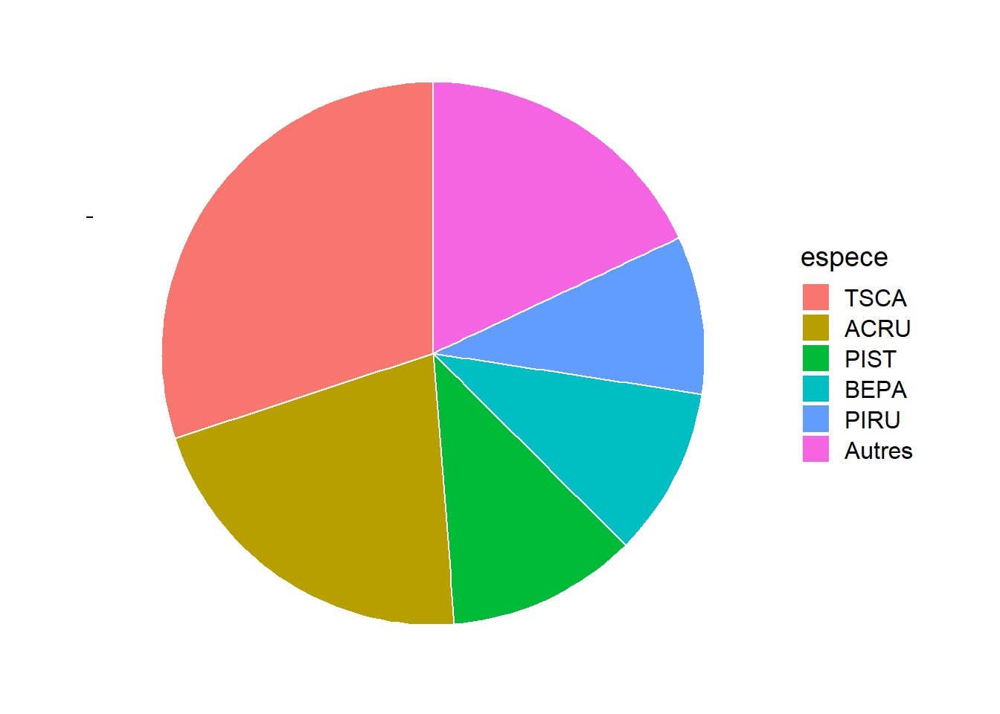
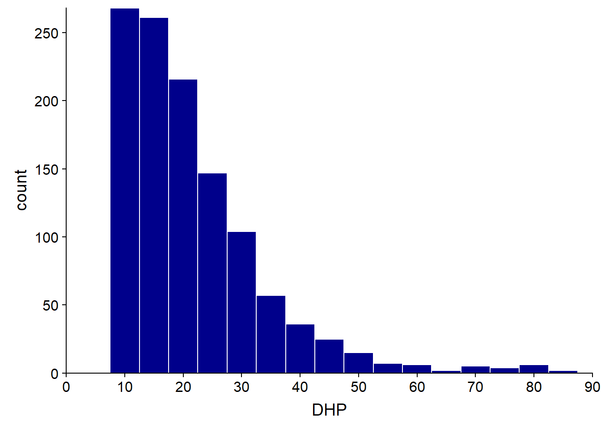
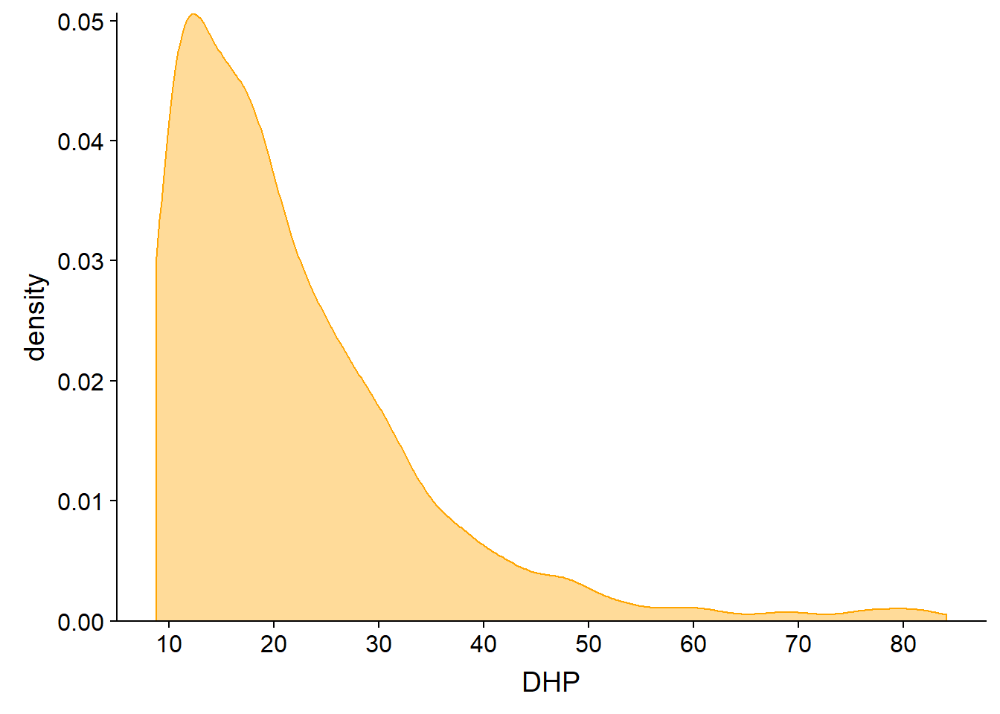
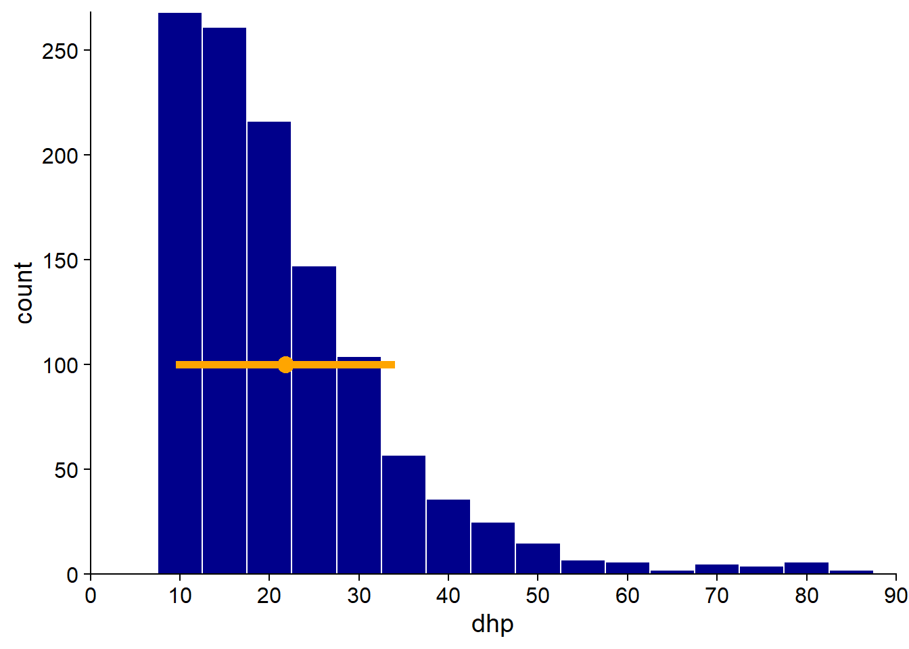
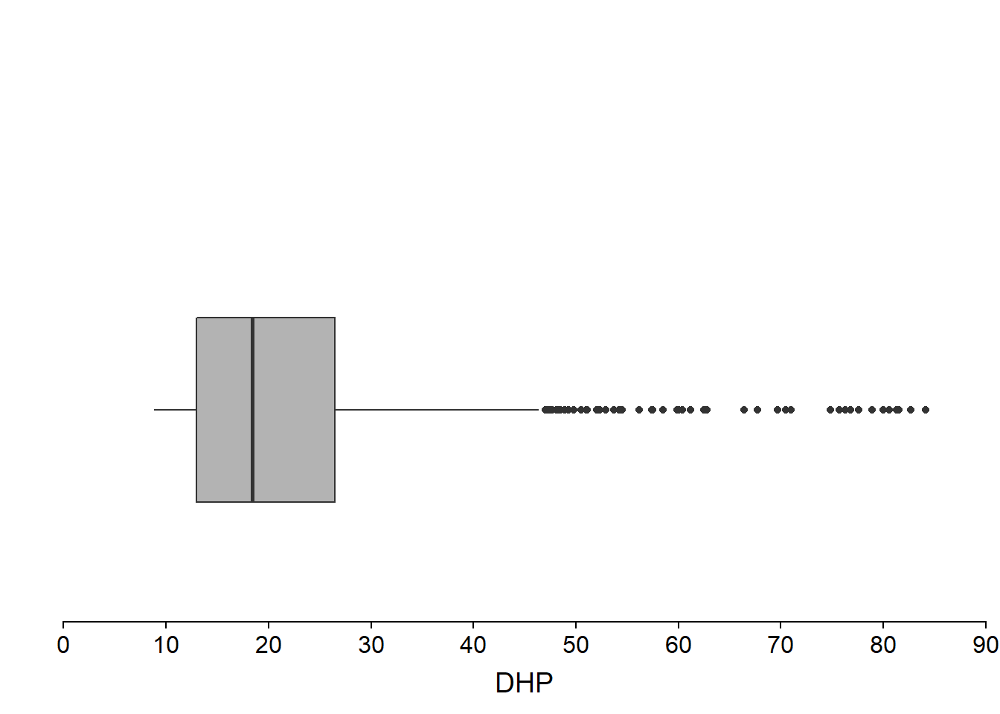
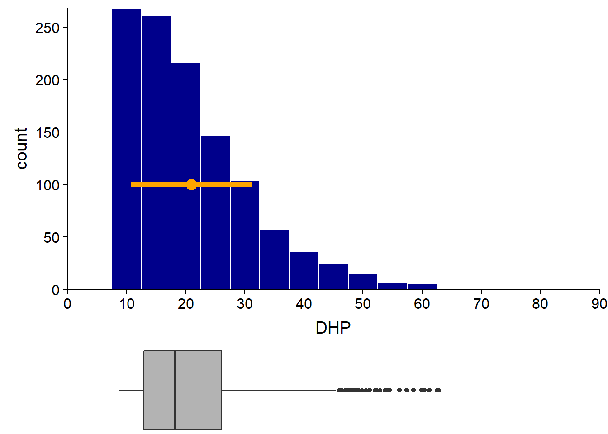
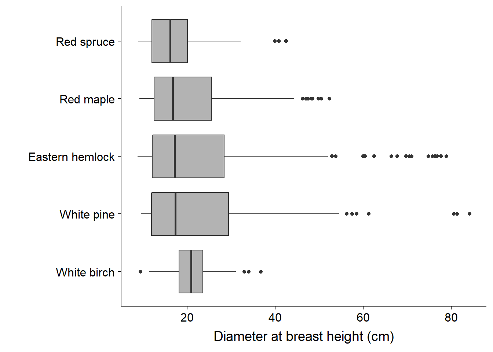
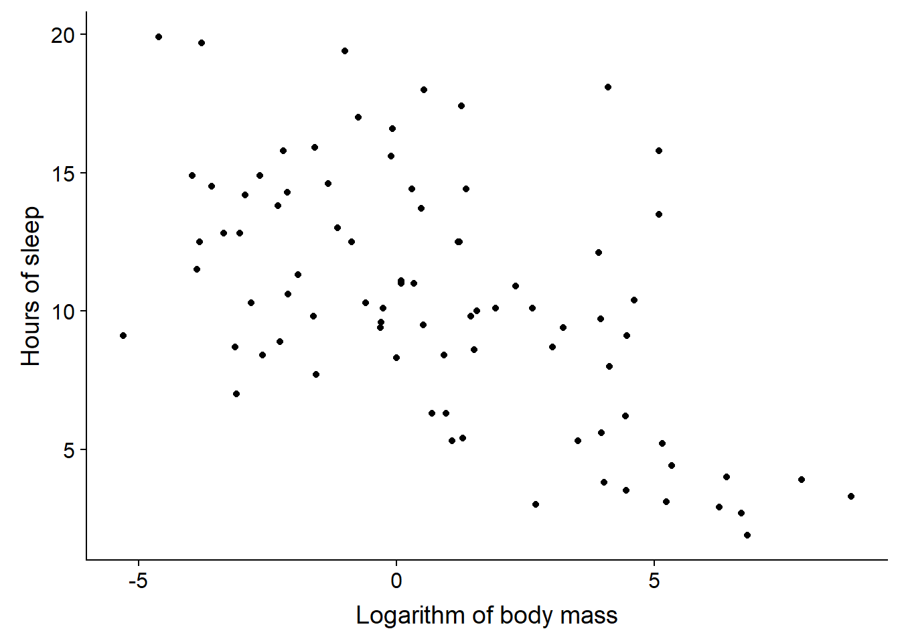

Descriptive statistics and graphics
August 31, 2020
Objectives
Describe the role of statistics as part of the scientific method.
Know the types of data commonly used in statistics.
Choose appropriate summary statistics and graphical representations for different questions and types of data.
The role of statistics
What types of questions require statistics?
The statistical methods that will be presented in this course are used throughout the natural and social sciences. There are, however, several reasons why these methods occupy a prominent place in certain disciplines, such as ecology.
We study complex systems, composed of many types of entities or individuals that interact. A given change can result in a chain of effects, feedback loops, and so on. Isolating the effect of a variable is therefore a significant challenge.
Individuals are not identical but vary on many levels.
Our ability to observe the system is limited, both in the number of variables measured, the number of individuals sampled, and the accuracy of the observations themselves.
The scientific method
The scientific method is often presented by a diagram like the one below. On the basis of past observations, researchers pose a hypothesis on the functioning of a system. From this hypothesis, we deduce certain predictions, which are compared to the result of an experiment designed specifically to test the hypothesis. The result leads either to the rejection of the hypothesis or to its provisional acceptance (until a competing hypothesis is proposed on the basis of new observations or results of an experiment).

In fact, every scientific study does not follow this whole pattern. Different teams can make new observations, formulate new theories or hypotheses, and design experiments to test these hypotheses. For some systems, it is not ethical or practical to perform controlled experiments, so hypotheses must be tested from observations.
There are also several types of scientific questions that are not hypothesis tests. For example:
How many species of birds are unique to this region?
What is the distribution range of jack pine? How will it be changed by climate change in the 21st century?
Role of statistics
The following four goals summarize most statistical applications:
Describe and summarize the characteristics of a dataset.
From measurements taken on a sample of individuals, estimate the characteristics of a variable, or of a relationship between variables, at the population level.
Test a hypothesis concerning these variables or relations between variables.
Predict the value of a variable for a new individual out of the sample.
Examples
What is the average diameter of the trees measured in a plot? (description, since we have measured all trees)
How many moose are there in the Parc de la Vérendrye? (estimate, since we have not seen them all)
- Is the population growing compared to the previous year? (hypothesis test)
- What will be the population in 10 years? (prediction)
The last three tasks (estimation, hypothesis testing and prediction) require the generalization of knowledge acquired from a limited number of observations. We will discuss them more in the following classes. For now, we focus on descriptive statistics.
Types of data
Dataset
For this lesson, we will use a tree inventory dataset from 20m x 20m plots at Kejimkujik National Park, Nova Scotia. These data are freely available on the Government of Canada Open Data Portal.
Here is an overview of the data. Here, num_arbre is the tree identification number, nb_tiges is the number of stems and dhp is the diameter at breast height (in cm).
## site parcelle jour mois annee num_arbre nb_tiges espece dhp
## 1 BD A 31 8 2004 1 1 TSCA 16.3
## 2 BD A 31 8 2004 2 1 TSCA 24.0
## 3 BD A 31 8 2004 6 1 TSCA 29.8
## 4 BD A 31 8 2004 7 1 ACRU 29.0
## 5 BD A 31 8 2004 8 1 TSCA 15.5
## 6 BD A 31 8 2004 9 1 TSCA 32.0We will distinguish four types of data, divided into two groups: numerical variables and categorical variables (sometimes called qualitative):
Continuous numeric variables can take a (theoretically) infinite number of possible values in a given interval. Example: diameter.
Discrete numeric variables can only take certain values in an interval, usually integers. Example: year, number of stems.
Nominal categorical variables indicate category membership, but these categories are not ordered. Example: site, species.
Ordinal categorical variables indicate the position on an ordered scale. Example: drainage class (xeric, mesic, hydrous), stage of life (seedling, sapling, mature tree).
Ordinal categorical variables are sometimes represented by numbers. However, the levels of a categorical variable are not quantities and the distance between two levels is not defined numerically.
Visualizing the distribution of a categorical variable
A bar graph is often used to visualize the number of observations in each category; in our example, the number of trees per species.

To put emphasis on the proportion of observations per category, some use pie charts.

Generally, pie charts are not recommended. They become difficult to read when the number of categories increases. Also, it is easier visually to estimate a length than a surface; in other words, the magnitudes can be better compared when they are represented on one dimension (as in the bar graph) than on two dimensions.
That said, the pie chart can be useful when you want to compare proportions to simple fractions like 1/2 or 1/4. For example, we see here that more than 50% of the trees belong to one of the two most common species, TSCA (hemlock) and ACRU (red maple).
For a dummy variable, the categories have no fixed order. By ordering them according to their frequency, as we have done here, we simplify the reading of the graph. For an ordinal variable, it is of course necessary to respect the order of the values of the variable.
Visualizing the distribution of a continuous numeric variable
A histogram is obtained by counting the number of observations in bins of equal size on the axis of the observed variable. Below, the histogram of the DBH clearly shows the asymmetry of the distribution (several small diameter trees and a few trees with very large diameters). We also note that the inventory has a minimum DHH around 10 cm.

The approximation of the distribution by a histogram depends on the choice of bin width, so it is useful to test several values. With too large bins, information on small-scale frequency variation is lost; with too small bins, the distribution appears irregular due to lack of data in each bin.
The density plot uses a kernel density estimation method to approximate the continuous probability distribution from the observations. As with the histogram, the density plot includes a parameter that determines the resolution of the graph on the x axis, ranging from a smoother to a more irregular distribution.

Summary statistics of a numeric variable
Mean, variance and standard deviation
Consider a data series \(x_1\), \(x_2\), …, \(x_n\) from \(n\) observations of a numeric variable \(x\).
The mean of \(x\) is denoted \(\bar{x}\) and defined as:
\[\bar{x} = \frac{x_1 + x_2 + ... + x_n}{n} = \frac{\sum_{i = 1}^{n} x_i}{n}\]
The average can be seen as the “balancing point” of a distribution: if each observation exerted a weight proportional to its distance from the average, these weights would be in equilibrium.

By this definition, if we subtract \(\bar{x}\) from each observation to obtain its deviation from the mean, the sum of these differences is equal to zero.

To measure the degree of dispersion of the data around their mean, we take the square of deviations from the mean. The mean of these squared deviations is called the variance, denoted \(\sigma_x^2\).
\[\sigma_x^2 = \frac{\sum_{i = 1}^{n} (x_i - \bar{x})^2}{n}\]
The unit of measure for the variance differs from that of the data (e.g. for a diameter in cm, the variance is in cm\(^2\)). For that reason, it is useful to report not the variance as such, but rather its square root, or standard deviation (\(\sigma_x\)).
\[\sigma_x = \sqrt{\frac{\sum_{i = 1}^{n} (x_i - \bar{x})^2}{n}}\]
Note: Here, we use the mean and the variance to describe a series of data, without reference to a statistical model or to a larger population. As we will see in the next class, when we want to estimate the variance or standard deviation of a population from a sample, the division by \(n\) is replaced by a division by \(n - 1\).
Since the mean and the standard deviation have the same units, their ratio can be calculated to obtain a measure of the relative dispersion of the data. This ratio is called coefficient of variation (CV) and is usually expressed as a percentage.
In our dataset, the trees have a mean DBH of 21.8 cm, with a standard deviation of 12.3 cm (CV of 56%). We add a point on the histogram to represent the mean and a line corresponding to a standard deviation on each side of the mean. Note that if the mean and standard deviation provide some information on the distribution of values, other information such as the asymmetry of the distribution is lost.

Rank Statistics
Other common summary statistics are based on the position of observations when they are ranked in ascending order. These include:
the minimum and the maximum;
the median: defined as the central rank observation, or for an even number of data, the mean of the two central observations;
the quantiles.
Quantiles can be seen as a generalization of the median. If the median divides the data into two groups containing the same number of observations, other types of quantiles divide the data into more than two groups. The most commonly used quantile types are quartiles (4 groups), quintiles (5 groups), deciles (10 groups) or percentiles (100 groups).
In particular, quartiles are used to define a graph named the boxplot.
Boxplot
Popularized by Tukey, this graph makes shows the position of the quartiles (including the median). The box between the 1st and 3rd quartile represents the region containing 50% of the observations. The distance between the 1st and 3rd quartile is called the interquartile range (or IQR). A whisker shows the range of the data on each side of the box.

Often, the maximum length of the whiskers is based on the IQR (1.5x the IQR, according to Tukey’s convention). Extreme values beyond those limits are represented by points.

By juxtaposing the histogram of the DBH and boxplot, we see that the latter represents the essential characteristics of the distribution, including the asymmetry, the minimum DBH and the presence of some very large trees.

Compared to the mean and standard deviation, quantile-based statistics are less sensitive to extreme values. Let’s see what happens if we remove the 18 trees (out of more than 1100) with a DBH greater than 65 cm.

The exclusion of these few large trees affects the average (4% decrease) and standard deviation (16% decrease) more than the median (1% decrease) or interquartile gap (2% decrease). Remember that the effect of an observation on the average depends on its distance to the latter. Comparatively, the median depends only on the number of smaller or larger observations, but not on the distance.
While the boxplot represents a distribution in a very coarse way, this simplicity can be an advantage when it comes to visualizing numerous distributions side-by-side. For example, we illustrate below the distribution of DBH of the main tree species at Kejimkujik. We see immediately that the DBH of white birches is less variable and distributed more symmetrically than that of other species.

Summary: Statistics of a single variable
Numerical variables
Visualize distribution: box plot, histogram, density chart
Measures of central tendency: median, mean
Measures of dispersion: range (max - min), interquartile range, standard deviation
For data series at different scales, relative dispersion can be compared by calculating the coefficient of variation (ratio of the standard deviation to the mean, often expressed in %).
Categorical variables
Visualize the distribution: bar graph.
Nominal variable: Only possible measure of central tendency is the mode (the most common value).
Ordinal variable: Since the categories are ordered, we can also define the median.
Relationship between two numeric variables
Finally, we will discuss statistics describing the relationship between two numeric variables. This relationship can be viewed using a scatter plot.
For example, here is a plot of the number of hours of sleep of 83 mammal species based on their body mass. The dataset comes from a study by Savage and West (2004) and is included with the ggplot2 package in R.

At first glance, there seems to be a trend where larger mammals sleep less.
Covariance and correlation
Let us take two variables \(x\) and \(y\) measured on the same individuals. Remember that the variance is the mean of the squared deviations of a variable from its mean.
\[\sigma_x^2 = \frac{\sum_{i = 1}^{n} (x_i - \bar{x})^2}{n}\]
The covariance is the mean of the deviations of \(x\) and \(y\) from their respective means.
\[\sigma_{xy} = \frac{\sum_{i = 1}^{n} (x_i - \bar{x}) (y_i - \bar{y})}{n}\]
When the variables tend to both be above (or below) their average, the differences are more often of the same sign, so the covariance is positive. When the differences tend to be of opposite sign, the covariance is negative.
It can be shown that the maximum absolute value of the covariance is equal to the product of the standard deviations of the two variables. Dividing the covariance by the product of the standard deviations gives a normalized value in the range -1 to 1. This value is Pearson’s correlation coefficient, \(\rho_{xy}\).
\[\rho_{xy} = \frac{\sigma_{xy}}{\sigma_x \sigma_y}\]
Pearson’s correlation coefficient measures the linear association between two variables. A coefficient of 1 (respectively, -1) corresponds to a perfect positive correlation (resp., negative). A coefficient of 0 indicates no correlation. For our previous example (sleep hours vs. log body mass), \(\rho_{xy}\) = -0.57.
If two variables are independent, i.e. knowing one of them does not provide any information on the other, their correlation is necessarily equal to zero. However, as the picture below shows, the opposite is not necessarily true.
 Source: Wikipédia
Source: Wikipédia
This figure shows the correlation coefficients associated with different scatter plots. The first row shows the progression from two independent variables (in the middle) towards stronger positive and negative associations. The second row shows that the correlation coefficient does not depend on the slope of a linear relationship between two variables. The third row gives several examples where the linear correlation is zero, even if there are (non-linear) association patterns between the two variables.
Initial data analysis
It is always useful to first explore the data before moving on to the modelling step. The purpose of this initial analysis is to become familiar with the dataset and identify its particularities or possible anomalies. Here are some suggested points to check.
For categorical variables:
- How many categories are there?
- Are some categories very rare?
For numeric variables:
- What is the range of the values?
- Is the distribution strongly skewed?
- Are there extreme values?
For all types of variables:
- Are there missing values and how many?
- Are there implausible values that could be errors?
References
For a more in-depth discussion of different methods and best practices to visualize data, I recommend the following online books:
Healy, K. Data Visualization: A practical introduction. https://socviz.co/ (physical book also available at the UQAT library)
Wilke, C.O. Fundamentals of Data Visualization. https://clauswilke.com/dataviz/